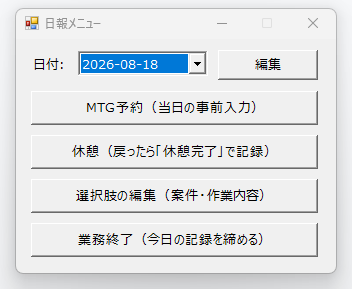
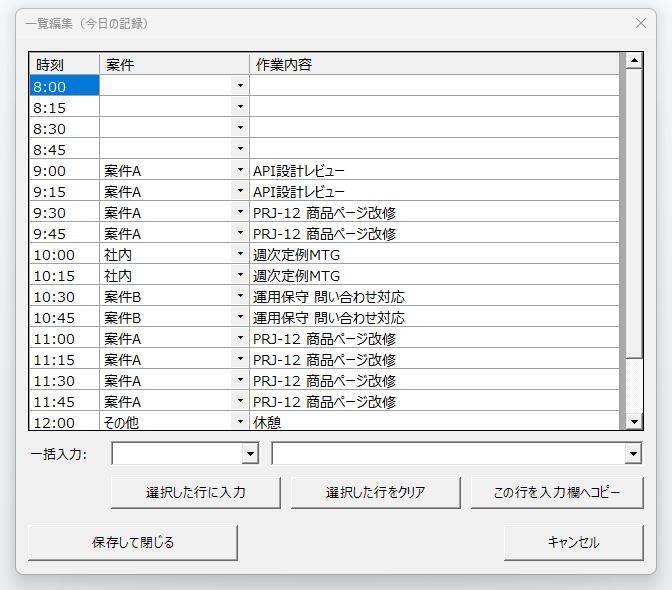
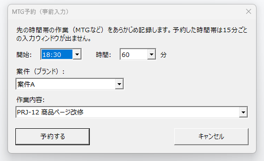

日報を、
あとで書かない。
15分ごとに「これからやる作業」を先に記録する、
自作の日報入力ツールの紹介です
日報のよくある困りごと
思い出せない
終業時にまとめて書こうとすると、午前中に何をしていたかの記憶がもう曖昧です。日報の精度が日ごとに落ちていきます。
粒度が粗くなる
「終日：開発」のような一行になりがちです。月次報告や工数集計に使おうとしても、案件別の内訳が出せません。
書くこと自体が負担
一日の最後に残る重いタスクになり、後回しや書き忘れが起きます。翌日にまとめて書くと、精度はさらに下がります。
原因は、あとで思い出して書いていることにあると思います。
始める前に、宣言する
作業する → 思い出す → 書く
記録の質が、記憶力と終業時の余力に左右されます。
次の作業を宣言する → 作業する
15分区切りごとに「これからやること」を選ぶだけです。記憶に頼らずに済みます。
作業を始めた時点で記録は済んでいるので、日報は書かなくても貯まっていきます。
一日の流れ
デスクトップのアイコンをダブルクリック
朝いちばんに起動して「業務開始」を押すと、記録が始まります。ショートカットは初回起動時に自動で用意され、消えても起動のたびに作り直されます。
2つのウィンドウで運用
入力ウィンドウが15分区切りごとに現れ、次の作業を宣言します。常駐の小窓（日報メニュー）からは、編集やMTG予約がいつでもできます。
表を確認して締める
業務終了は好きなタイミングで押せます。一日の記録が表で出るので、確認・修正して「締め」でCSVを保存します。キャンセルすれば通常どおりに戻ります。
報告書の元データが揃っている
15分単位・案件別のCSVが毎日貯まっているので、月次報告書への転記は集計するだけです。
15分ごとに、選ぶのは3つだけ

15分区切りごとに、この画面だけが出てきます。
- 15分区切りのタイミングで自動で表示されます。自分で開かなくても、画面のほうから出てきます。宣言した時間（15〜120分）のあいだは表示されません
- 案件と作業内容は選択式なので、数秒で終わります。
- 新しい作業名は直接入力でき、次回から選択肢に自動で加わります。
- 休憩は長さを決めずに始められます。戻って「休憩完了」を押した時点までが休憩になります。15分未満なら記録しないので、押し間違えてもデータは汚れません
- MTG予約済みの時間帯には出てこないので、会議の邪魔をしません。
常駐の小窓から、いつでも5つの操作

×で閉じてもタスクトレイに常駐します。

「休憩」を押すと出る窓です。
- 編集 日報ログのある日付を選び、時刻・案件・作業内容の表をその場で直せます。過去の日付も直せます（次のスライド）
- MTG予約 当日の先の時間枠を、会議の予定で先に押さえます。
- 休憩 入力ウィンドウを待たずに休憩に入れます。
- 選択肢の編集 案件と作業内容の候補をその場で整理できます。
- 業務終了 いつでも締めの処理に進めます。入力ウィンドウとトレイアイコンからも同じ操作ができます。3つの入口は、表記も動きも揃えてあります
あとから直せるから、迷わず記録できる

「編集」で開く一日の記録表です。業務終了時の確認画面も同じものです。
- 日報ログのある日付なら、どの日でも開けます。入力し忘れた枠の穴埋めも、過去日の修正もここでできます。
- 「この行を入力欄へコピー」から「選択した行に入力」で、同じ作業をマウスだけで複製できます。まとまった時間の記録を一気に埋められます
- 空欄にすると、その枠の記録を消せます。MTG予約の取り消しもここで行います。
- 保存すると時刻順に並べ直して、CSVを書き直します。ExcelでCSVを開いて書式が変わっても、読み込む側で吸収します
会議が始まる瞬間に、入力を求めない
15分ごとに窓が出る仕組みのいちばんの弱点は、会議中に出てくることです。そこで、会議は先に枠を予約しておく形にしました。

- 開始時刻・時間（30分か60分）・案件・作業内容を指定して、先の枠を記録します。
- 予約した時間帯は入力ウィンドウを出しません。会議に集中でき、記録はもう済んでいます。
- 予定がなくなったら、「編集」でその枠を消すだけです。
残るのは、素直なCSV
1日1ファイル、1行が15分の枠です。UTF-8（BOM付き）なので、Excelでそのまま開けます。保存先は 日報ログ\日報ログ_2026-07-31.csv のような名前です。
| 日付 | 時刻 | 案件 | 作業内容 |
|---|---|---|---|
| 2026/07/31 | 9:00 | 案件A | API設計レビュー |
| 2026/07/31 | 9:15 | 案件A | API設計レビュー |
| 2026/07/31 | 9:30 | 案件A | PRJ-12 商品ページ改修 |
| 2026/07/31 | 9:45 | 社内 | 週次定例MTG |
| 2026/07/31 | 12:00 | その他 | 休憩 |
- ピボットで集計するだけで、案件別・作業別の工数が出ます。月次報告の元データにそのまま使えます。
- 休憩も1行として残るので、空白が入力し忘れなのか休んでいたのかで迷いません。
- データベースもクラウドも使わない、ただのファイルです。いつでも読めて、壊れにくい形です。
選択肢はテキスト2つ、手入れは画面から
日報設定\作業名.txt
# 見出しの前は全案件で共通に表示 社内MTG 資料作成 [案件A] API設計 PRJ-12 商品ページ改修 [案件B] 運用保守

- 使うのは「案件.txt」と「作業名.txt」の2ファイルだけです。#でコメントも書けます。
- 作業名は[案件名]の見出しでまとめます。選んだ案件の作業名と、共通の作業名だけが選択肢に出ます。
- 表示のたびに読み直すので、メモ帳で直せば次の窓から反映されます。
- 入力ウィンドウで新しく入れた作業名は、その案件の見出しの下に自動で書き足されます。放っておいても候補は育ち、整理したいときだけ手を入れます
- 「選択肢の編集」の画面で、追加・名前変更・削除・並べ替え・別案件への移動ができます。コメント行は残します。
- 名前を変えたり消したりしても、変わるのは次回からの選択肢だけです。過去のCSVは当時の表記のまま残ります。
中身は、このフォルダひとつ
インストールも設定画面もありません。フォルダごと渡せば、そのまま動きます。
日報記録\├ 日報入力.bat起動用（デスクトップのショートカットの実体）├ Nippo-Batch.ps1プログラム本体。直すのはここだけ├ ユーザーマニュアル.xlsx利用者向けの使い方├ ユーザーマニュアル生成.ps1上のマニュアルを作り直すスクリプト├ 日報システム紹介プレゼン.htmlツールの紹介資料（この資料の元）├ README.md構成と保守のメモ（引き継ぎ用）├ 日報ログ\出力。1日1ファイルのCSV├ 日報設定\案件.txt と 作業名.txt└ 画像\資料に貼る画面写真
- ログも設定もスクリプトと同じ場所を見に行くので、フォルダを移しても動きます。
- データはCSVとテキスト、プログラムはPowerShellだけです。専用の形式やデータベースは使っていません。
- マニュアルと紹介資料も同じ場所に置いているので、フォルダを渡せば引き継げます。
Windowsの標準機能だけで動く
- ショートカットからバッチ、PowerShellスクリプトへとつなぐだけの構成です。サーバーもインストールも要りません。実行ファイル（exe）化と自動起動は、配布先の環境によっては使えないため見送り、手動起動とショートカットの自動作成にしました
- スクリプトを直せば、次の起動から反映されます。ビルドがないので、思いついた改善をその日のうちに入れられます。
- 開発と改修は、Claude Code と話しながら進めました。「MTG中は窓を出さないで」のような要望を、そのまま実装にしています。
この仕組みで変わったこと
記憶に頼らなくなった
作業の前に宣言するので、抜け漏れや思い出す手間が起きにくくなりました。
15分単位のログが自動で貯まる
月次報告や工数集計の元データが、いつでも手元にあります。
運用で引っかかるところを潰した
MTG予約、過去日の編集、休憩の記録、トレイへの常駐を足しました。
中身はテキストとCSVだけ
誰でも読めるので、ほかの人にもそのまま渡せます。
利用マニュアル（Excel、クリックでダウンロード）は配布フォルダにも入っています。ツール本体は日報入力ツールのページから入手できます。
この仕組みは、どう作ったか
元エンジニアなので、コードは読めますし、調べれば書けます。ただ、いまは開発が本業ではありません。そこで Claude Code と話しながら、自分は出てきたものを確かめる役に回って作りました。仕様書はつくっていません。
私がやったこと
何に困っているか、どう動いてほしいかを日本語で伝えました。動作環境の制約も伝え、出てきたコードと画面に目を通して、気になったことをそのまま言いました。
AIがやったこと
PowerShellでの実装、既存コードの整理、動作確認の仕組みづくり、マニュアルとこの資料の作成です。
決めたのは人
何を作るか、どこで妥協するかは、使っている本人にしか決められません。AIは提案はしますが、決めてはくれません。
最初に伝えたのは、この2つだけ
日報の作成をAIに任せられないか。15分単位で作業内容を記録・報告する必要がある。
15分単位で入力を求めるバッチにする。案件と作業内容を入れる窓を出し、前回の入力を保持するチェックをつける。OKでCSVの末尾に積み上げ、最後にExcelへ貼れば日報になる。
- 2通目で、AIに書かせる案から、15分ごとに入力させる仕組みへ方式を切り替えました。ここは人が決めています。
- 前回入力の保持、CSVへの積み上げ、Excelに貼って完成という芯の要件は、この時点で出そろっていて、いまも変わっていません。
- 休憩・MTG予約・一覧編集は、使いながらあとから足しました。最初から全部を決めてはいません。
短いやり取りを、何度も回す
困りごとと、解き方の見当を伝える
最初は「日報を任せられないか」でした。すぐに「15分ごとに入力を求める仕組みでいい」と方式を切り替えています。設計書は書きませんが、どう解くかは自分で決めています。
その場で動くものが出てくる
コードが書かれ、すぐに試せます。気に入らなければ言い直します。1回で完成させようとしないのがこつです。
壊れていないかを毎回みる
設定の読み込み、CSVの書き込み、記録の重複防止などを自動で確かめる仕組みを、最初に作ってもらいました。直すたびに流すので、安心して手を入れられます。
決めた理由と、やめた理由を残す
なぜこの形にしたかを、AIがドキュメントに書き足していきます。次に触るときに、同じ検討をくり返さずに済みます。
こう言ったら、こうなった
| 伝えたこと | 起きたこと |
|---|---|
| 「休憩ボタンを配置して」 | ボタンを足したあと、使ってみて「長さは戻ってから決めたい」と伝え、その場で方式ごと作り直しました。 |
| 「機能ごとにIDを振って、同じ挙動にして」 | 入力画面・メニュー・トレイの3つの入口が、同じ定義を呼ぶ形になりました。ボタン名のずれもなくなりました。 |
| 「1つの実行ファイルにしたい」 | exe化したところ、できた実行ファイルがセキュリティ製品に隔離されたので、元の方式に戻しました。経緯も記録に残しています。 |
| 「マニュアルをExcelで作って」 | マニュアルを作るスクリプトができました。画面の写真も自動で撮るので、画面を変えたら撮り直すだけです。 |
途中で気が変わってもかまいません。使ってみて初めて分かることのほうが多く、うまくいかなかったことも残しておけば、同じ失敗をくり返さずに済みます。
AIから見た、この進め方
手を動かした側のAIに、最後まで崩れなかった理由を挙げてもらいました。
出口から逆算していた
15分単位・案件と作業内容という粒度は、月次報告書へ転記するという出口から決まっていました。作りながら仕様が揺れなかった、いちばんの理由です。
要件を小分けに出した
一度に全部を伝えず、1機能ずつ頼みました。手戻りが小さく、毎回動くものが残りました。
やめる判断が早い
exe化も自動起動も、使えないと分かった時点で引き返しました。試した記録だけを残しています。
自動化の線引き
月1回の転記は手作業のままにして、毎回くり返すもの（確認・マニュアル・画面撮影）だけを自動にしました。
データを閉じ込めない
CSVとテキストだけなので、この道具がなくなっても記録は読めます。
使う人と作る人が同じ
使って感じた違和感が、その日のうちに修正になりました。
やってみて、分かったこと
- 完璧な仕様はいらない 使いながら決めるほうが、結果として早く、実態にも合います。
- 環境の制約は、自分にしか分からない 「実行ファイルは使えない」「自動起動は使えない」は、伝えて初めて設計に入ります。
- 確認の仕組みとドキュメントを一緒に作ってもらう 安心して直せるようになり、半年後の自分が助かります。
- 読めることが、そのまま速さになる 出てきたものを確かめられるので、細かく指示しなくても任せられます。自分で書くより速いと思います。
- AIは決めてくれない 何を作るか、どこでやめるかを決めるのは、いつも人の側です。
道具を自分で作るハードルは、もう高くないと思います。この資料と利用マニュアルも、同じやり方で作りました。
AIでうまくいかない原因を、どう避けたか
| よくあるつまずき | 今回どうしていたか |
|---|---|
| 丸ごと任せて一気に作らせる期待とずれて、直すより作り直したくなる | 1機能ずつ小分けに頼みました。毎回動く状態で止めるので、戻る場所を見失いません。 |
| 環境の前提を伝えない手元で動かないものができる | 動作環境の制約をその都度伝えました。exe化は使えないと分かった時点でやめ、記録だけ残しました。 |
| 「できました」を確かめずに信じる動かない・要件を満たさないものが残る | 自分で動かし、コードも読んで、気になる点を伝えました。直っていない箇所は、その場でやり直しを頼みました。 |
| 完璧な仕様を作ろうとする考えているあいだ、何も生まれない | 最初の2通のメッセージだけで始めました。細かいところは使いながら決めました。 |
| 作って終わりにする半年後、自分でも直せなくなる | 動作確認の仕組み、マニュアル、判断の経緯を残しました。 |
| 実データをそのまま渡す・資料に載せる気づかないうちに社外へ出る | 資料の画面写真はダミーの値に差し替えました。仕組みも手元で完結し、外に出ない構成です。 |
どれも、人に仕事を頼むときの作法とほとんど同じだと思います。
ほかのAIでも、作れたのか
コードを書くことは、いまの主要なAIならどれもできたはずです。分かれ目は、自分のPCで動かして、結果を見て、直すというループを回せるかどうかだと思います。
| AIの使い方（例） | この使い方だと、どこまでできたか |
|---|---|
| チャットだけで使うChatGPT、Gemini、Claude（ブラウザ版）、Grok、Microsoft Copilot | 中核の機能は作れたはずです。ただ、貼り付け、実行、エラーを書き戻す作業がすべて手作業になります。 |
| サンドボックスで実行できるチャットChatGPT のデータ分析、Gemini のコード実行 | 実行がサービス側で完結するので、手元のWindowsの画面操作やローカルのファイル・Excelの読み書きには向きません。 |
| エディタの補完GitHub Copilot（補完）、Cursor のタブ補完、Amazon Q Developer | 書く速さは上がりますが、実行して結果を見て直すところまでは含まれません。 |
ほかのAIでも、作れたのか
| AIの使い方（例） | この使い方だと、どこまでできたか |
|---|---|
| エージェント型のツールClaude Code（今回）、Cursor（Agent）、Cline、Windsurf、GitHub Copilot（エージェントモード）、Codex CLI、Gemini CLI、Devin | 今回の作業の大半が再現できたはずです。この形のツールのあいだでは、大きな差はないと思います。 |
| 調べる・まとめるツールNotebookLM、Deep Research（ChatGPT・Gemini）、Microsoft 365 Copilot | 用途が違い、今回は使っていません。着手前の下調べや、できた資料の要約・想定問答づくりには使えます。 |
各サービスを実際に試して比べたものではなく、Claude Code で行った作業を基準に、使い方の違いを整理したものです（2026年8月時点の理解）。各サービスの現在の機能は、提供元の公開情報をご確認ください。各社名・製品名は各社の商標または登録商標で、当社は各社と提携・監修等の関係にありません。
効いたのは、書く以外の作業
今回、Claude Code が人の手を借りずに行った作業
- スクリプトを実行し、確認の結果を読んで直す
- exe化を試し、実行が止められる原因を切り分ける
- デスクトップやスタートアップのショートカットを作る・消す
- Excelを操作してマニュアルを作り、アプリを起動して画面を自動で撮る
どのAIでも変わらないこと
「実行ファイルは使えない」「自動起動は使えない」といった動作環境の制約は、伝えて初めて設計に入ります。休憩の仕様を3回変えたのも、使ってみた本人の判断でした。
道具の差が出るのは、実行まで任せられるかどうかだと思います。何を作るかを決めるのは人です。
使いこなしは、どの段階にあるか
どれだけ使いこなせているかを測る客観的な物差しは、いまのところありません。代わりに、AIとの付き合い方を5つの段階に分けて振り返ります。
聞く
分からないことを質問します。調べものの相手として使う段階です。
書かせる
文章やコードを作らせます。出てきたものは自分で確かめ、自分で動かします。
任せる
実行と確認まで任せ、こちらはどう動いてほしいかと、うまくいっていない点を伝える役に回ります。
仕組みにする（今回はここ）
くり返す作業を自動にして、決めた理由を記録に残します。動作確認・マニュアル作成・画面撮影まで組み込みました。
広げる（始めたところ）
自分だけの道具で終わらせず、ほかの人が使える形にします。この資料と利用マニュアルが、その最初の一歩です。
行動で確かめる6つの問い
AIをうまく使えているかは、次の6つで確かめられると思います。
- 目的を自分の言葉で言えるか 何に困っていて、どうなれば成功かを説明できること。今回は、最初の2通で前回入力の保持・CSVへの積み上げ・Excelに貼る流れまで伝えていました
- 解き方を自分で決められるか 提案をうのみにせず方式を選び、やめる判断もできること。今回は、AIに書かせる案から15分ごとの入力バッチへ切り替えました
- AIが知らない前提を渡せるか 環境や運用の制約、これまでの経緯は外から見えません。今回は「実行ファイルは使えない」「自動起動は使えない」
- 出てきたものを確かめられるか 動かして確かめ、読んで違和感に気づけること。今回は、文字の折り返しの違和感を、CSSの max-width の指定が原因だと突き止めて伝えました
- 渡していい情報の線引きができるか 出せない情報を、渡さない・資料に載せないこと。今回は、画面写真の案件名をダミーの値に差し替えました
- 一度きりにせず、仕組みと記録に残せるか 次に触る人（半年後の自分も含めて）が困らない形にすること。今回は、動作確認・マニュアル作成・画面撮影をくり返せる形にしました
何％使えているかより、
どこまで任せて、
どこで自分が判断するかを
考えるのが大事だと思います。